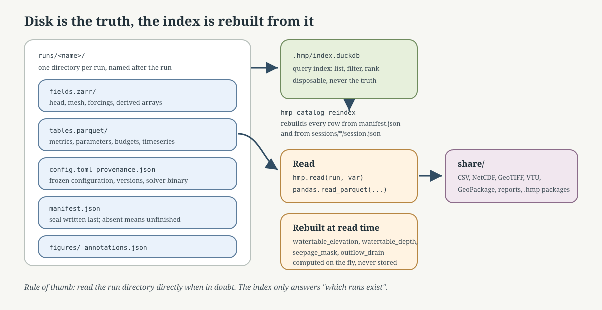

Results and Exports#
HydroModPy V1 writes durable results at the project level. Each project holds its own DuckDB catalog with simulation metadata, metrics, parameters, budgets, provenance, and lookup tables. Per-run Zarr and Parquet stores hold the field arrays, meshes, rasters, timeseries, and derived arrays.
There is one simulation catalog per project, not one DuckDB per
simulation. A simulation receives one row in that project catalog and
its heavy payloads live beside it under simulations/:
catalog.duckdb: project-level index, metadata, metrics, parameters, provenance, calibration traces, workflow ledger, and SQL views.simulations/<basename>.zarror.zarr.zip: per-simulation arrays, mesh, spatial fields, topography rasters, and forcings.simulations/<basename>.parquet/*.parquet: per-simulation tabular payloads (timeseries, budgets, mass balance), exposed as DuckDB views.
<basename> is normally <project>__<name>__<shortuuid>. Older
workspaces may still use the full raw sim_id on disk; they remain readable.
Result Store Map#
{kind=link}

Fig. 177 Read the result system in three layers: the workspace catalog records metadata and tabular diagnostics, each run store carries arrays and spatial objects, and the reading/export APIs convert those objects into tables, scientific files, figures, or portable packages.#
Core objects#
Object |
Role |
|---|---|
|
Project-level registry opened by |
|
One persisted simulation resolved from the catalog. It reads one catalog row plus that simulation’s Zarr/Parquet artefacts. |
|
A set of runs used for comparison, calibration, or testbed analysis. |
|
Configuration block controlling result persistence and export options. |
CLI reading path#
hmp catalog ls
hmp catalog ls --project my_basin
hmp catalog show <sim_id>
hmp catalog show <sim_id> --detail
hmp best my_basin --metric nse
hmp worst my_basin --metric nse
hmp report compare <sim_a> <sim_b>
hmp viz show <sim_id> <figure>
sim_id accepts a unique prefix. Use hmp catalog show --detail when you
need file and store details (mesh, Zarr layout), and the plain
hmp catalog show when you need metadata, metrics, or parameters.
Python reading path#
Common catalog operations include listing simulations, resolving ids, finding the latest or best run, querying fields and timeseries, reading budget and mass-balance records, exporting portable packages, and importing a package into another workspace.
Query cookbook#
List completed runs for one project:
Resolve a run id prefix, then open the Run view:
sim_id = catalog.resolve("ab12")
run = catalog[sim_id]
Read a field through the V1 facade (dispatches to Zarr or Parquet via the field registry):
Read station time series:
q = catalog.query_timeseries(
sim_id,
station_id="J1234010",
variable="discharge",
period=("2000-01-01", "2005-12-31"),
)
Read budgets, mass balance, and provenance:
budgets = catalog.query_budget(sim_id)
outlet_budget = catalog.query_budget(sim_id, zone_id="outlet")
mass_balance = catalog.query_mass_balance(sim_id)
provenance = catalog.get_provenance(sim_id)
Use SQL when you need a cross-run table:
ranking = catalog.sql(
"""
SELECT s.project, s.name, m.metric_name, m.value
FROM simulations s
JOIN metrics m ON s.sim_id = m.sim_id
WHERE s.status = 'completed'
AND m.metric_name = ?
ORDER BY m.value DESC
""",
["nse"],
)
Export cookbook#
Export all persisted timeseries to CSV:
catalog.export(run.sim_id, "*", "csv", "exports/timeseries.csv")
Export one field to common external formats:
catalog.export(run.sim_id, "head", "netcdf", "exports/head.nc")
catalog.export(run.sim_id, "head", "geotiff", "exports/head_last.tif", timestep=-1)
catalog.export(run.sim_id, "head", "vtu", "exports/head_last.vtu", timestep=-1)
Package a full run for exchange:
catalog.export_package(run.sim_id, "exports/my_run.hmp")
catalog.import_package("exports/my_run.hmp")
Export formats#
Format |
Command / API |
Typical use |
|---|---|---|
CSV |
|
Tables, metrics, timeseries, and lightweight exchange. |
GeoTIFF |
|
Raster fields for GIS tools. |
NetCDF |
|
Gridded scientific arrays and model outputs. |
Shapefile |
|
Vector GIS exchange where legacy tooling needs shapefiles. |
VTU |
|
Mesh and field visualization in ParaView. |
|
|
Portable run package containing config, inputs, results, and manifest. |
Temporal conventions in CSV exports#
Comparison CSV files distinguish state snapshots from period values explicitly.
Use the time_role column before interpreting time_index or
elapsed_seconds.
|
Meaning |
|---|---|
|
Explicit state before the first transient period. It is useful for initial-condition diagnostics, but it is not a budget period. |
|
Instantaneous model state at the reported elapsed time, for example a hydraulic-head or watertable map. |
|
Value associated with a completed period. Budget tables also provide
|
|
Row obtained by reducing several time rows, for example with a mean, min, max, or sum reducer. |
For budgets, elapsed_seconds is the period end time. Do not compare a
period_value row to an initial_state row. Boussinesq histories may store
an explicit initial state at t = 0; comparison budget exports skip that row
instead of treating it as a zero-duration budget.
Comparison metrics also enforce this distinction: fallback matching can align
equivalent elapsed times or equivalent non-initial order positions, but it must
not compare rows with different time_role values. For explicit state
selection, prefer time = "initial_state" when the initial condition itself
is the target, and time = "first_computed" when the first transient result
is the target. The legacy time = "first" selector means “first available
row” and is therefore ambiguous when one solver exports an initial state and
another starts at the first computed step.
Package exchange#
hmp export <sim_id> -o my_run.hmp
hmp add my_run.hmp
hmp add my_run.hmp --dry-run
Use .hmp packages for reproducible handoff between workspaces. Use format
exports when the next consumer is GIS, ParaView, a notebook, or an external
analysis tool.
Documentation boundaries#
This page is the user entry point. For low-level classes and methods, see API Reference. For result-page reading order, see How To Read Gallery, Comparison, and Validation Pages.